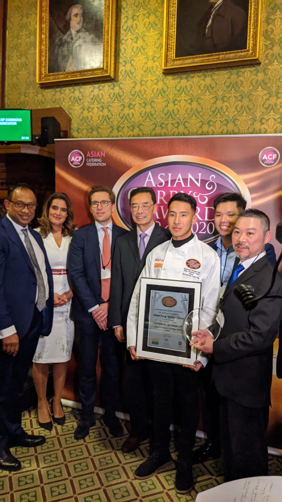
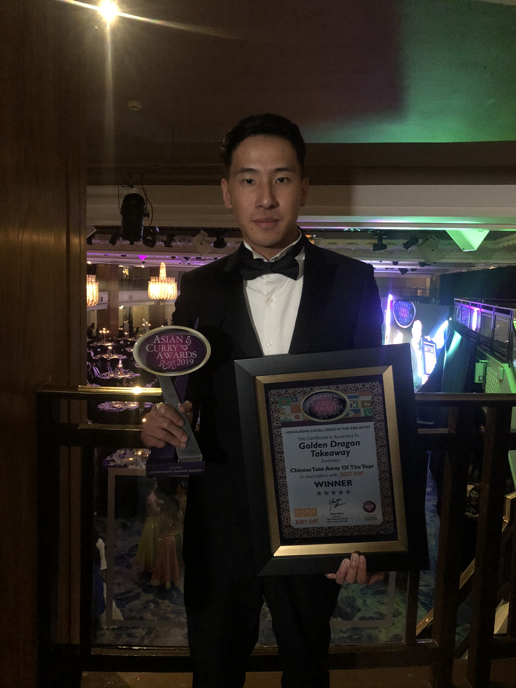
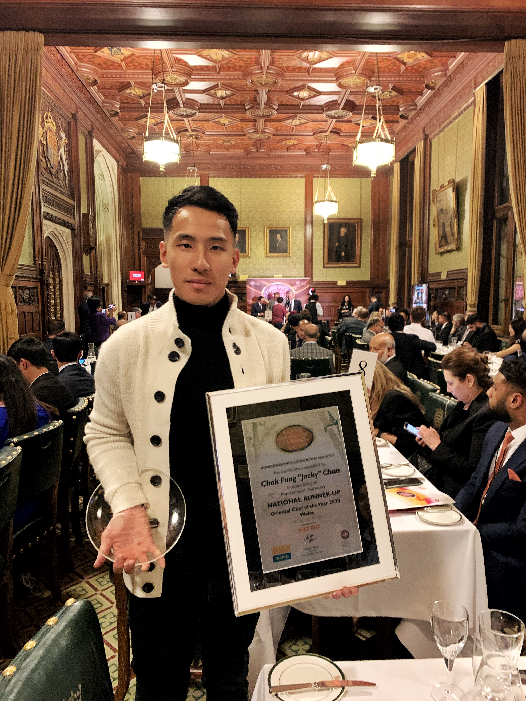

清晰優先
去除術語，聚焦真正重要的理念。
關於我
站在科技與商業的交匯點，讓構想落地成真
工程師。創業家。應用人工智能實踐者。

Chan Chak Fung · 陳澤鋒
我的工作，游走於新興科技與現實應用之間——那正是工程、創業、業務營運與應用人工智能交匯的地方。
我的路徑始於工程，其後走過創業與業務營運——在英國及香港創辦並經營企業，然後才轉向人工智能與新興科技。憑藉超過 7 年跨行業經驗，擔任總經理及技術總監，我透過實際執行而非單純理論學習科技：主導高風險數碼轉型、管理策略性損益，以及推動組織重組。我現正於香港中文大學修讀行政人員工商管理碩士（EMBA），為多年來從實戰中累積的經驗，增添正式的管理學基礎。
今日，作為應用人工智能實踐者及科技評論人，我致力貫通新興科技與真實商業需求之間的落差；作為低空經濟實踐者，我帶領企業無人機部署、應對複雜的監管治理，並為香港新興的低空經濟構建實用系統。我將沿途所得，寫下來、講出來。
「讓我們共同部署未來。」
我的思考方式
這是我分析科技與商業問題的其中一種方式——並非正式框架，只是我經常回到的思考角度：
01 — AI 能力
科技今天實際能做到什麼。
02 — 業務需要
組織實際需要達成什麼。
03 — 營運現實
日常工作實際如何運作。
04 — 實際應用
能力、需要與現實，實際能在哪裡相遇。
05 — 商業價值
令整件事有意義的最終成果。
我稱之為「應用 AI 落差」——大部分項目失敗，並非因為缺乏想法，而是卡在能力與現實之間。
去除術語，聚焦真正重要的理念。
將每個科技對話與真實價值及成果連結。
建立信心、好奇心及動力——而非對變化的恐懼。
我的歷程
從工程基礎到高管領導：創辦企業、轉型行業，以及推進香港低空經濟發展。
中學，香港
中學，香港
基礎課程 · 英國威爾斯斯旺西
電機電子工程學士（BEng）
創新及營運總監 · 4 間分店：卡迪夫、斯旺西、倫敦、伯明翰
大使 / 義工
董事總經理及聯合創辦人 · Web3 及元宇宙初創企業
出售所有英國業務並返回香港
工程及科技經理
董事
香港中文大學
創辦人及董事
董事及股東 · 澳門低空經濟企業
現職 / 進行中 — 螢光標示的里程碑代表目前的職業及學術承擔。
精選榮譽
在更深入投入科技領域之前，我曾建立及經營過真正的企業。2018 年至 2023 年間，我在英國建立屢獲殊榮的餐飲業務——以創新、營運及顧客體驗贏得全國認可。
Best Business Awards · Awards Intelligence



媒體報道
資歷
橫跨 AI、航空、工程安全、BIM 及廚藝的專業資格。
工業安全
人工智能
航空
建築信息模型
建築信息模型
美食學
AI 如何重塑運營、策略及競爭優勢——以及領袖現在必須採取的行動。
將AI從對話工具轉化為真正運作於業務營運之中的系統——這種轉變實際需要什麼。
新興低空經濟格局——法規、商業機遇，以及企業如何在無人機經濟中搶佔先機。
人工智能如何走出螢幕——電腦視覺、機器人技術、無人機及智能實體系統。
將科技炒作轉化為業務成果——識別及應用合適工具的無術語指南。
應對不確定性、建立韌性，以及帶領團隊度過科技及社會顛覆。
將這些理念帶給你的受眾